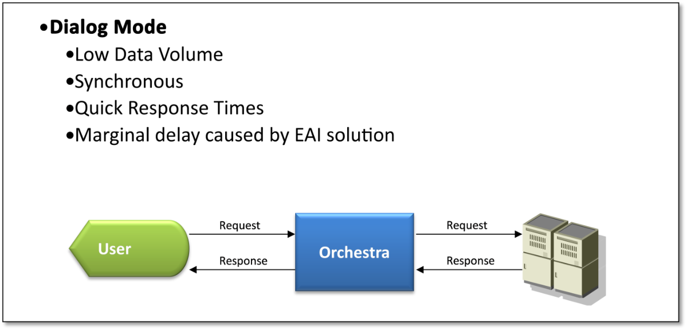
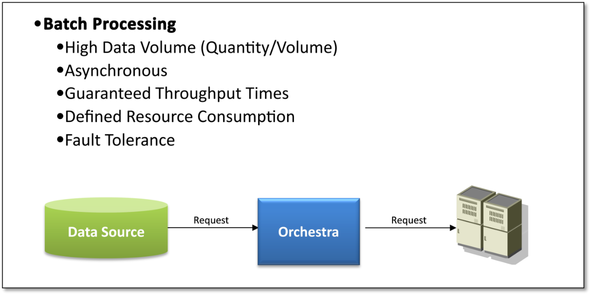

Introduction

Topic content
The architecture of Orchestra is completely based on well-established engineering principles like modularization, separation of concerns and loose coupling. On basis of these principles a flexible architecture was defined that is capable of serving the functional requirements as well as all non-functional requirements given to a service bus like Orchestra.
During the design of Orchestra, two main operation modes can be identified:
1.A dialog mode, where a user ( or system ) sends a request to Orchestra and waits for an immediate response.
2.A batch mode where data is processed asynchronously and the sender doesn't wait for a immediate response.
In the following sections this modes and the associated requirements are explained in more detail.
dialog mode

batch mode

The hybrid model of Orchestra
Since Orchestra has to solve different requirements that are opposite to each other, a very flexible approach is required that can fit to all of this requirements. Therefore the idea of hybrid processing model was created. This hybrid process model tries to serves the two ares of interfaces scenario to its best
High performance with synchronous, service-oriented interfaces
•Message storing in main memory
•No overhead due to multiple parsing
•No overhead due to storing of states
Secure, reliable and robust with asynchronous processing
•Persistent storage of messages
•Efficient message access through optimized storage structure
•Maintaining of processing state in the database
•No message size limitation
•Resilient against errors caused by integrated restart
Futhermore, the design of Orchestra is mainly based on the following fundamental principles:
Design principle
•Loosely coupled system components
•Less dependencies between different system components
•Try to reduce system complexity to a minimum
•Messages are the base representation of all application data processed within Orchestra
•No commitment to predefined structures for storing messages.